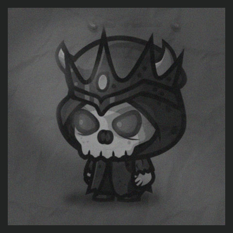

Un guerrero imponente y resistente, el Guardian de la Roca es un experto en la defensa y el combate cuerpo a cuerpo. Protege a sus aliados con valentía y utiliza su arma, la Piedra Dominante, para golpear a sus enemigos con fuerza devastadora. Habilidades destacadas: Resistencia sobrehumana, defensa sólida y gran fuerza física. Arma: Piedra Dominante - Un martillo de guerra hecho de una piedra sólida y resistente.
El Maestro de las Hojas es un hábil y ágil guerrero que domina las técnicas de combate con espadas. Su destreza y rapidez son legendarias, y su arma, la Hoja Cortante, corta a través de los enemigos con precisión letal. Habilidades destacadas: Agilidad sobresaliente, reflejos rápidos y habilidades excepcionales con las espadas. Arma: Hoja Cortante - Una espada afilada y elegante con una hoja reluciente
La Reina de la Corte es una poderosa hechicera que controla la magia ancestral. Su sabiduría y encanto la convierten en una líder natural, capaz de apoyar a sus aliados y lanzar devastadores ataques mágicos. Su arma, la Tijera Vengadora, canaliza su poder mágico. Habilidades destacadas: Dominio de la magia, habilidades de curación y capacidades de control de masas. Arma: Tijera Vengadora - Un par de tijeras mágicas que emanan energía mística.
Un monstruo aterrador y poderoso, el Esqueleto Infernal es una criatura proveniente de las profundidades del inframundo. Es conocido por su resistencia sobrenatural y su sed de destrucción. Su apariencia es la de un esqueleto en llamas, lo que lo convierte en un enemigo formidable. Habilidades destacadas: Resistencia infernal, fuerza descomunal y capacidad para controlar el fuego.
